⚽️ The rules 🍲
The aim isn't to cook in support of a team, or to pick the winning team (although we like to keep track of how it ties in). It's to cook as wide a range of new dishes as possible, to learn new things about each country, and try new food. Aim to avoid repetition of teams as much as you can (some strategic choices during group stages come in handy here!).
For a better idea of how this works, have a look at one of the previous tournament sites:
If you'd like to stay right up to date I tend to add everything to instagram before it appears on this site.
Countries eaten
Wins eaten
Draws eaten
Losses eaten
Match 12: 22 June 2021
🇨🇿 Czech Republic vs 🏴 England
TBC
Česnečka
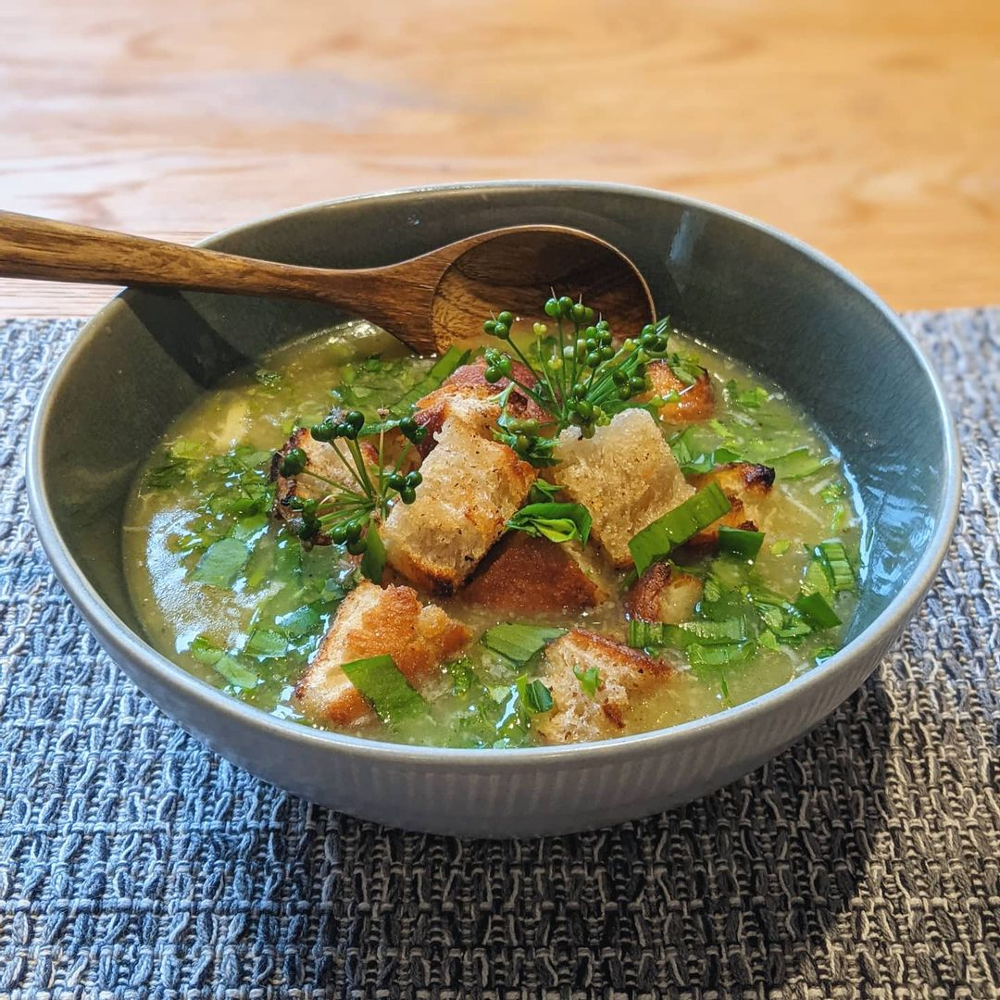Back to back garlic meals, woo! This is a traditional Czech garlic soup, also apparently known as "hangover soup".
This went from "errrrr it just tastes like garlic water" to actually being really good and something I'd do again. I'd recommend having a good stock (we used chicken), and using a lot more garlic (we also chucked in some garlic powder). It also needs seasoning really well to bring out the flavour if your stock isn't too salty.
Definitely recommend having croutons, and adding the cheese to serve (just used grated parmesan as wasn't going on another cheese mission so soon again). The last dying wild garlic plants are still just holding on, so we used some leaves and some of the fruits for garnish, which also gave it a lot more garlic flavour.
Match 11: 21 June 2021
🇺🇦 Ukraine vs 🇦🇹 Austria
0-1
Chicken Kiev
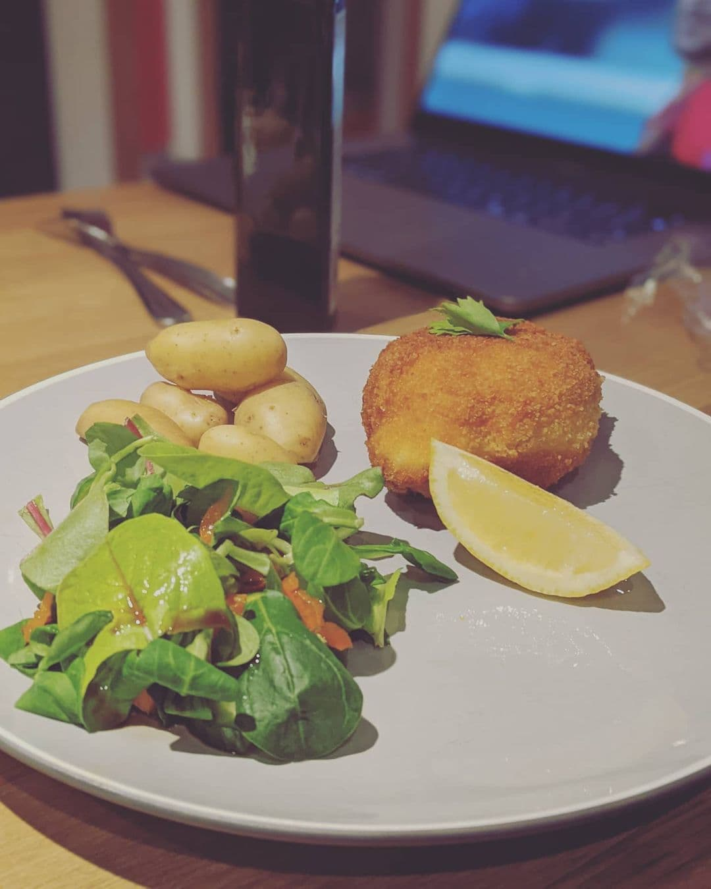There's always some dish where the origins are contested and you could arguably do it for one country or another, but if there's a bronze sculpture of one in Kyiv then that's enough to declare a winner for me.
Not much to say about making this apart from to recommend taking the time to bash out the chicken as thin as the recipe says, and that freezing definitely helps. We managed to get a really good exterior crunch, they puffed up nicely, and all stayed sealed. Served it with a little side salad as I'd been craving vegetables (another common curse of this game), plus boiled potato.
Match 10: 20 June 2021
🇮🇹 Italy vs 🏴 Wales
1-0
Crempog
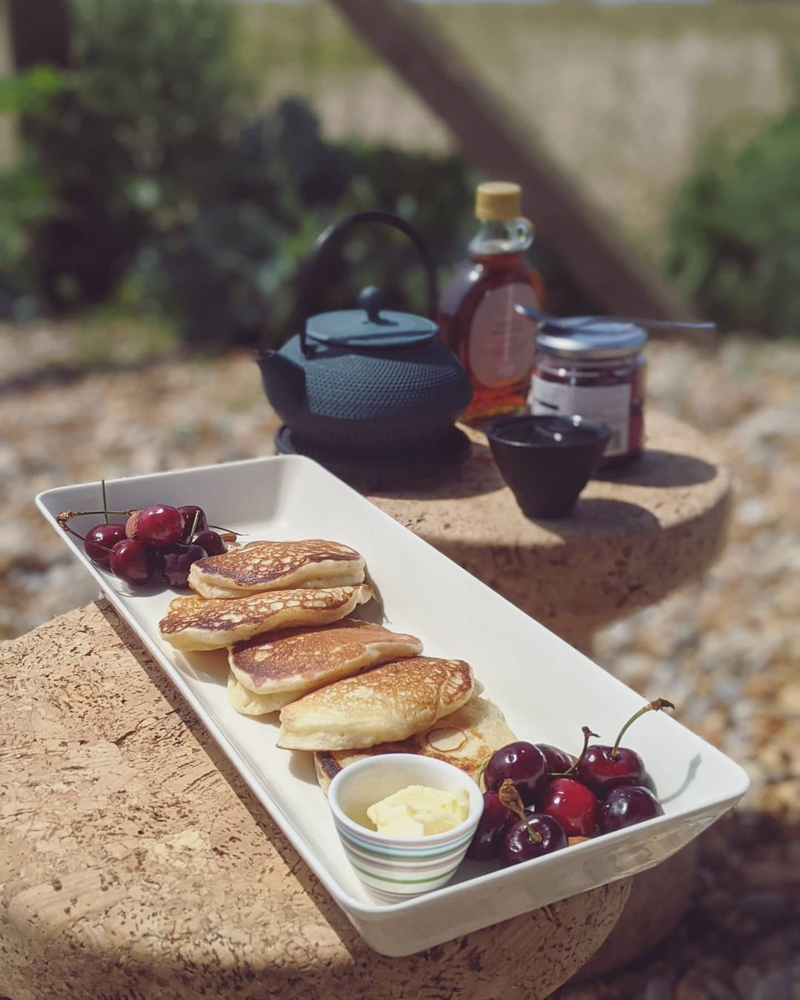Another breakfast rather than a dinner, but it was my last night in Dungeness and I wanted to relax and be lazy on the last evening. Plus also because I couldn't not cook something with a name as great as "Crempog".
Thanks to my additional shopping trip in Hythe I was able to get buttermilk, which I don't think I've actually ever cooked with before. The batter came together really nicely, and I even followed the recipe by letting it rest for a while as I shot over to one of the neighbouring open studios in the morning.
I gave myself some topping options and they were great with butter, jam, and syrup. Would definitely make these again for brunch sometime.
Match 9: 19 June 2021
🇭🇺 Hungary vs 🇫🇷 France
1-1
Tartiflette
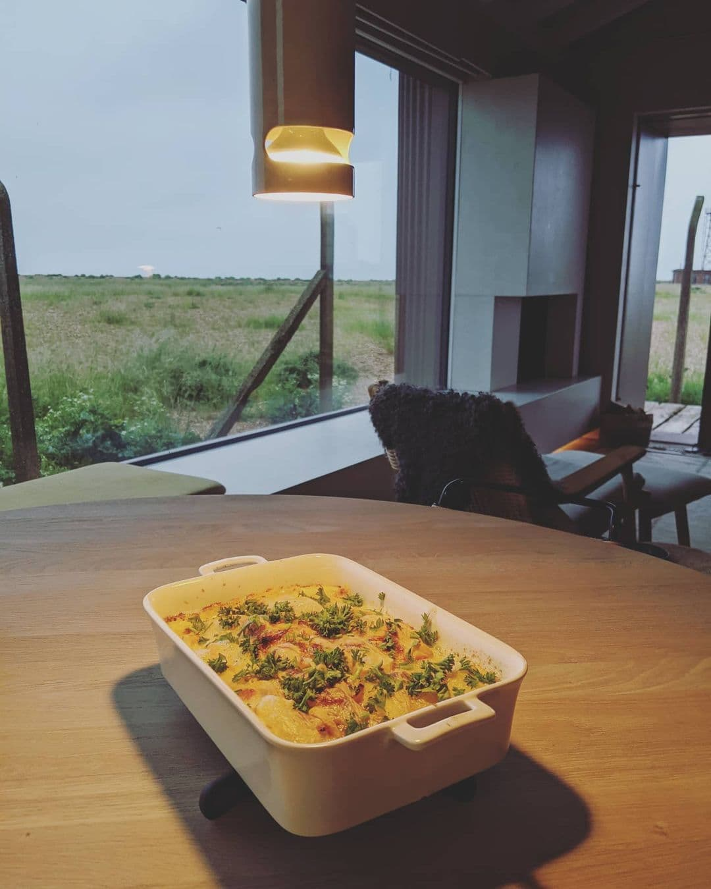 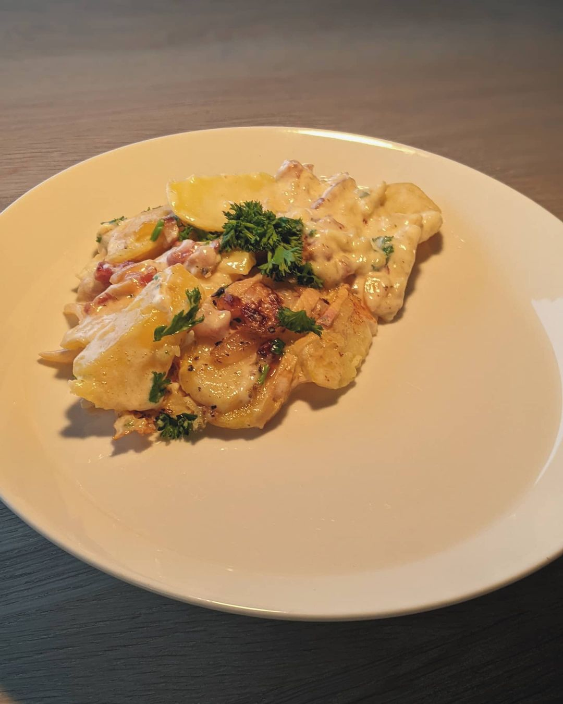Tartiflette is one of the few things that French mountains have over Austrian mountains, in my opinion. It's rich, utterly delicious, and full of all the best kinds of bad ingredients.
On my way down south I swung past John Lewis Food Hall in Bluewater to buy the bits I'd need, as I thought of all the middle class places I'd be passing that'd have niche cheese, they would. Sadly, despite having a cheese shop within a supermarket, there was no reblochon in sight. Shame on you, John Lewis Food Hall.
Determined to find some and not bodge it with substitutions, on Saturday I went on a drive in the middle of my day of long walks, driving from Dungeness to Hythe (hour round trip) where thankfully they had not one but two reblochon options. Dinner was saved!
After walking all day, holeing up back at my pad for a bath, sauna, and with an alpine filthy cheese meal to follow was much needed.
Back at home my husband was also still playing along, and was boasting about how he was going one-up my tartiflette by making an "enhanced" one. I was on board at first, when he was talking about infusing the cream with rosemary. Sure, sounds nice. Then I got the photos of the full monstrosity, shared without comment (😂).
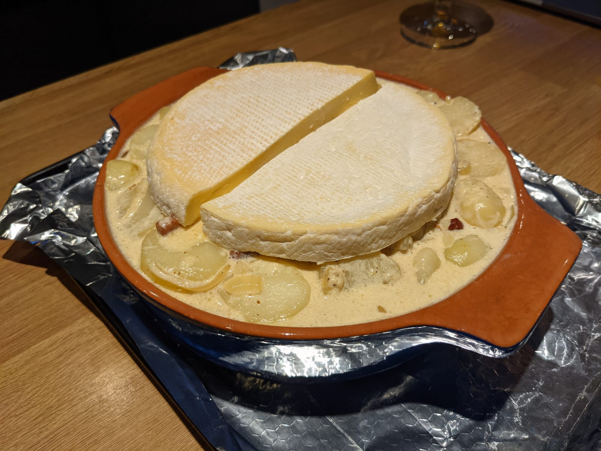 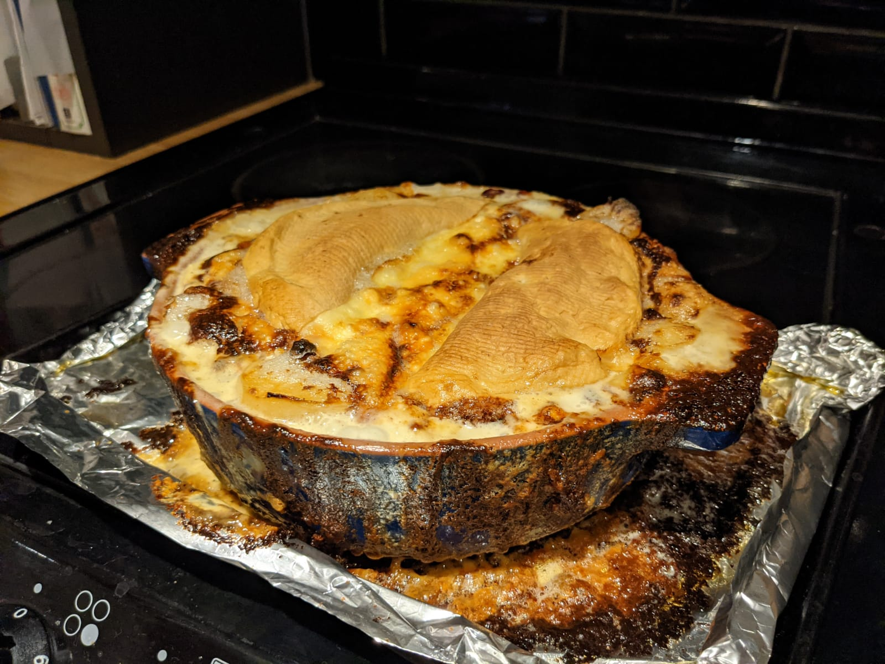Match 8: 18 June 2021
🏴 England vs 🏴 Scotland
0-0
Toad in the hole, Bakewell tarts
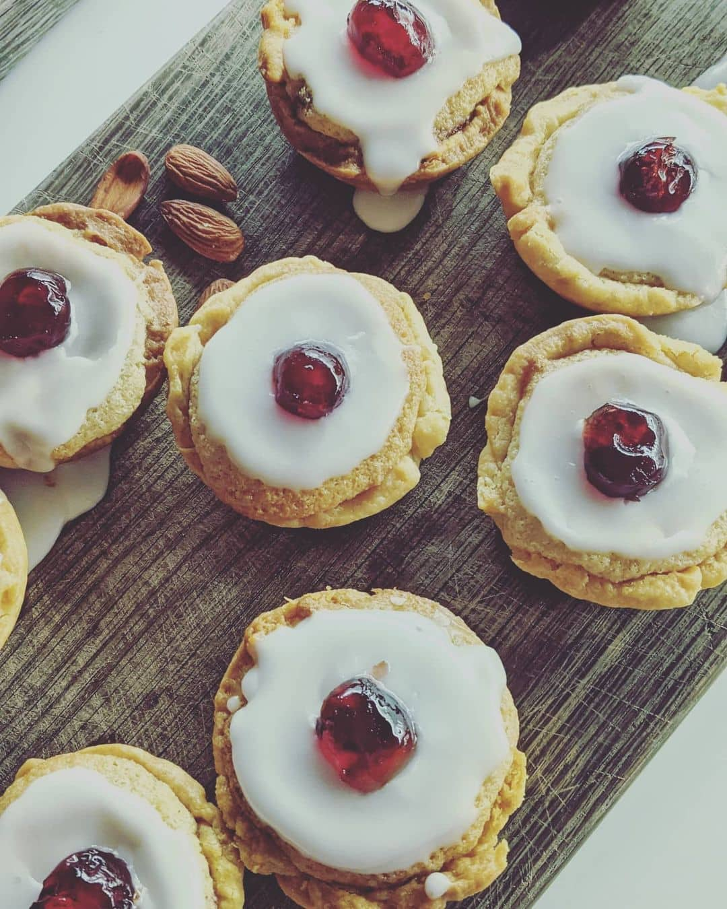 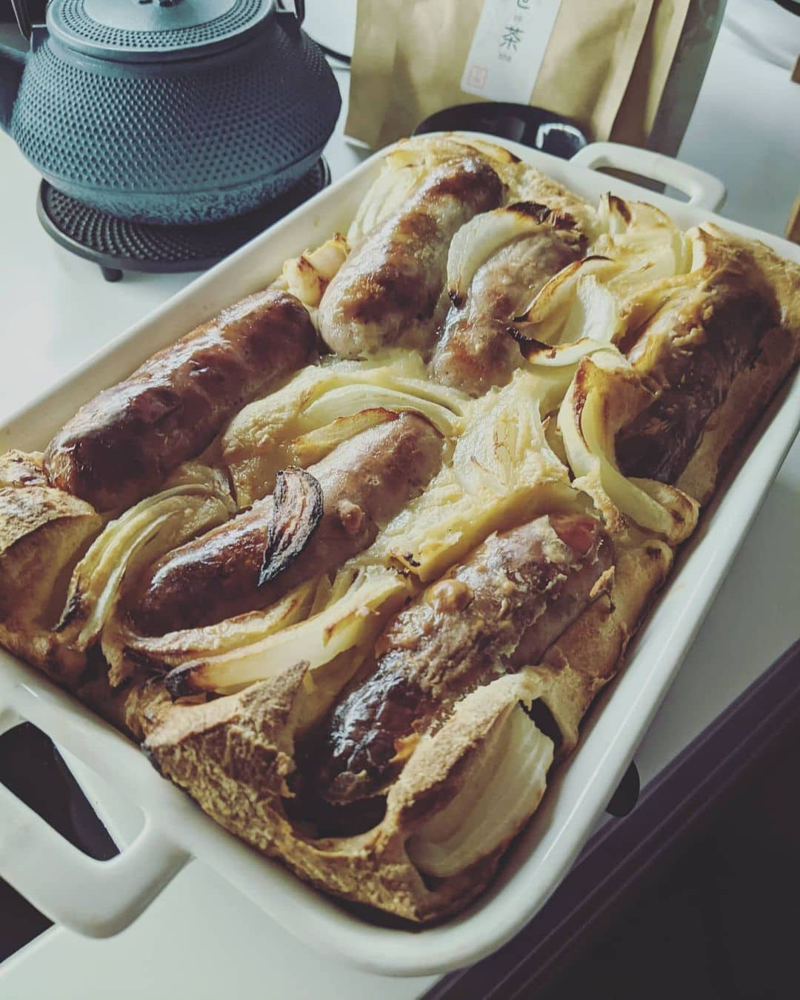I was off on a solo holiday away today. This time I thought I'd bring some of the basics that I'd need over the next few days, and packed a sensible dish, baking trays, and scales amongst ingredients. However I totally forgot that baking may need some kind of blind baking equipment, and had to horribly improvise with... some almonds (kind of worked)... and a lot of squishing as it cooked, so that stopped me from feeling too smug.
Dish-wise I can't remember the last time I've had, let alone made toad in the hole, so it was nice to have something different even from "home". I've also never made bakewell tarts so that was new, and bodged pastry aside these turned out deliciously. The toad in the hole was dished up with mustard onion gravy as in the recipe, and the leftover sausages served me well cold the next day.
Match 7: 17 June 2021
🇺🇦 Ukraine vs 🇲🇰 North Macedonia
2-1
Tavče gravče
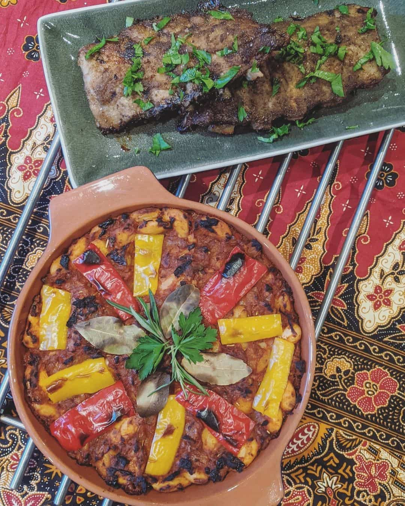This one was... basically beans in a sauce, and was pretty much what I'd expected. We, er, added a bit of good old msg to the beans to make that aspect a bit more tasty, but to be fair with the rib meat it was pretty ok. However not one I'll probably be rushing back to.
Match 6: 16 June 2021
🇫🇮 Finland vs 🇷🇺 Russia
0-1
Poronkäristys
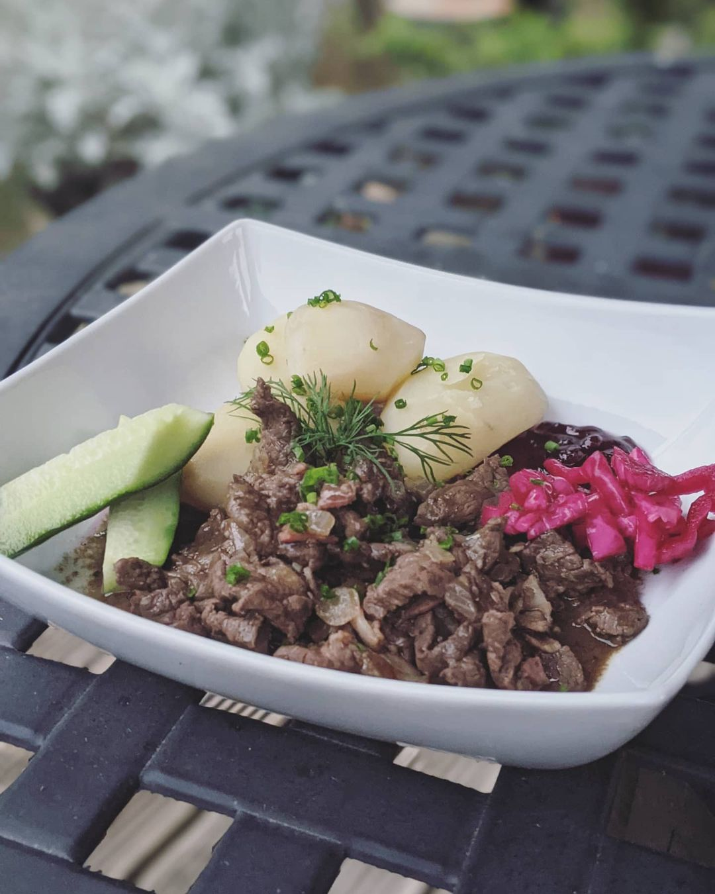This was good! One of our regular dishes in rotation is gyudon, and freezing/slicing the meat thinly to cook in liquid reminded me a bit of that.
Recipe-wise we didn't get reindeer, we used venison. We also mostly followed the linked recipe below in terms of process, but ingredient wise also decided to use beef stock, beer, and bacon as in this recipe, because let's be honest, those things can only make a meal better. I also added juniper as in that recipe, which I'd recommend as it gave it a really nice taste combined with the all spice of the other.
We dished it up with potatoes, lingonberry sauce (which I'll admit I didn't eat after the first bite, still not a fruit and meat fan), plus some quick pickled cucumbers, and some pickled red cabbage that I'd bought in Norfolk from a house selling plants out the front.
Match 5: 15 June 2021
🇭🇺 Hungary vs 🇵🇹 Portugal
0-3
Arroz de Pato
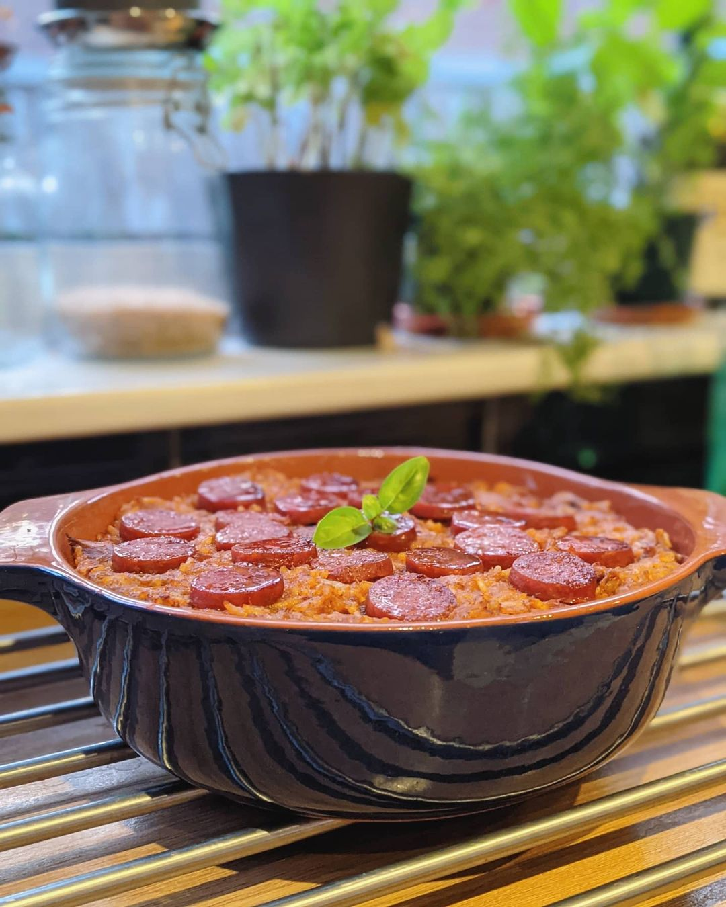...But speaking of meals that may make it into more regular rotation, this was very tasty. Thanks to Saxmundham not being able to provide the originally planned salt cod, plus a recommendation from Adam we ended up enjoying this ducky chorizo feast.
It baaaasically followed the (translated) recipe below, but for extra flavour we used a whole duck and stripped the meat rather than using breasts, plus generally did tweaks to taste with seasoning and spices.
Match 4: 14 June 2021
🏴 Scotland vs 🇨🇿 Czech Republic
0-2
Cullen Skink
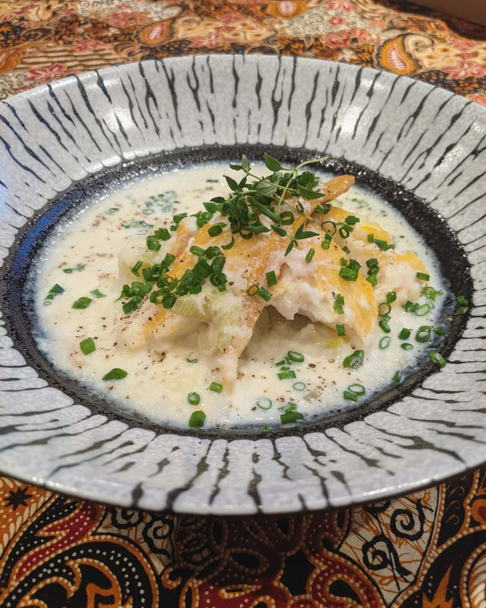Back home, and a chance to actually cook some proper dinners as the game was originally intended! I came back via a walk/beach sit in Covehithe and a detour to Southwold for fish and chips, plus I was hoping to pick up some smoked haddock. Alas, Monday was fishmonger off day it seemed, so it was back to making the most of what I could get from a supermarket (shout out to Saxmundham Tesco).
I used the following recipe, which was... fine. But I'll admit, I did chuck in a fair bit of absolutely-not-Scottish dashi to stop it from being quite so bland. I also wouldn't cook the fish in water, I'd probably just go straight to using the milk if I did this again. Outside of that it was tasty enough, but probably not one that I'll do regularly.
Match 3: 13 June 2021
🇦🇹 Austria vs 🇲🇰 North Macedonia
3-1
Tiroler Gröstl

I'd like to thank past me for having the foresight to plan for Tiroler Gröstl brunch as a hangover cure. There were some evil, evil cocktails last night, and this was very welcome this morning.
This dish is one of my staples of Austrian ski times, and it's very simple but very tasty. I also bought some smoked Austrian cheese after seeing it in the local supermaket when we bought supplies, and despite being totally unnecessary that also added something extra.
Match 2: 12 June 2021
🇩🇰 Denmark vs 🇫🇮 Finland
0-1
Kanelsnegle
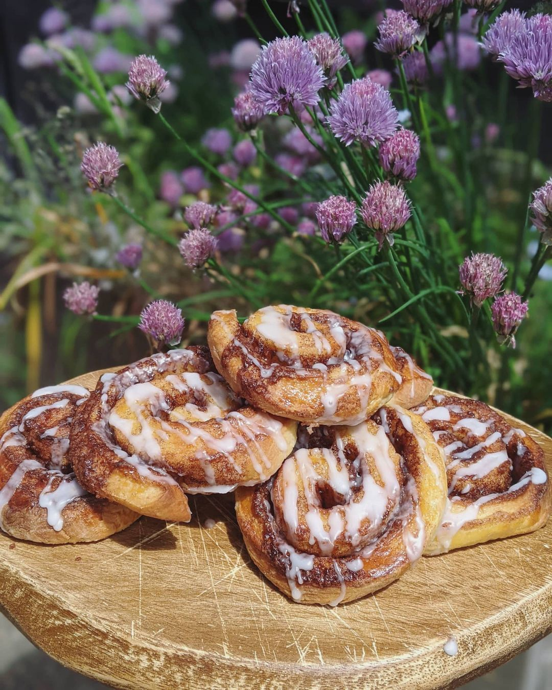My brother had rudely rebooked his postponed wedding for today (no consideration for those of us trying to watch football and cook things). He also tried to feed me mushrooms for dinner, so I'm not sure we're really even related any more. However, this meant it was another early one.
Since yesterday I'd had more of a root around in the Airbnb kitchen and managed to find a massive measuring jug bowl which made making dough a bit easier than in the saucepan of day 1. Still used ramekins for amounts and played it a bit by eye with the flour as it all felt too sticky, but somehow everything worked out fine.
These buns were absolutely delicious, and were really easy to make around getting ready; switching over to have a shower when it needed to rest etc. It made a good pre-wedding snack, and I was genuinely intending to stash some in my car in case I wanted one in the evening, but sadly forgot.
Was so sad to hear about Christian Eriksen collapsing during the match, never nice to see anything like that happening. Hope he makes a full recovery.
Match 1: 11 June 2021
🇹🇷 Turkey vs 🇮🇹 Italy
0-3
Gözleme
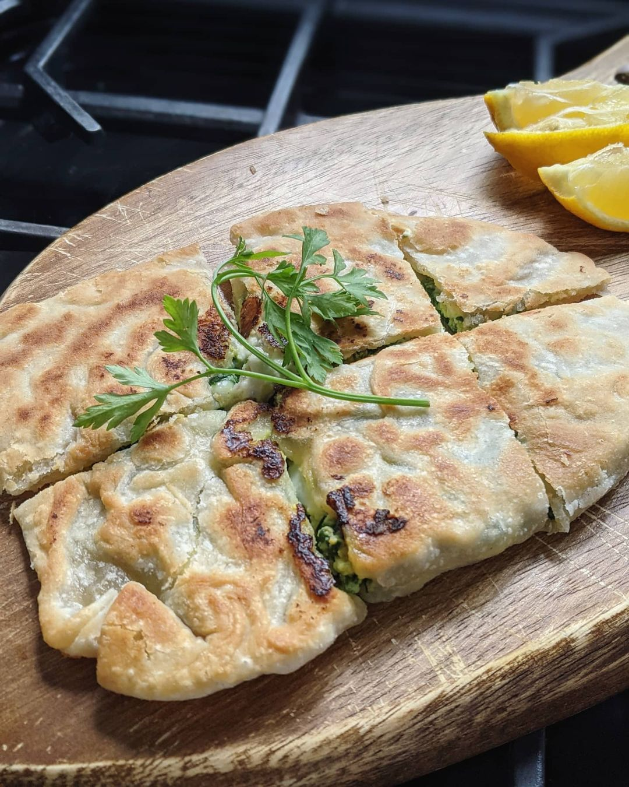A pandemic may have postponed things, but I'm finally back for another year. The first couple of weeks are going to be a bit bumpy as I'm not going to be not at home much and will be winging it in terms of ingredients and equipment, but that's kind of half the fun nowadays!
Today is Gözelme: Turkish flatbread stuffed with spinach and "feta" (local shop didn't have feta, first bit of improv).
Considering I made the dough without any measuring apart from a ramekin I found in a cupboard, and had to bring it together in a saucepan, I'm pretty pleased. Pretty tasty lunch snack, would make again.